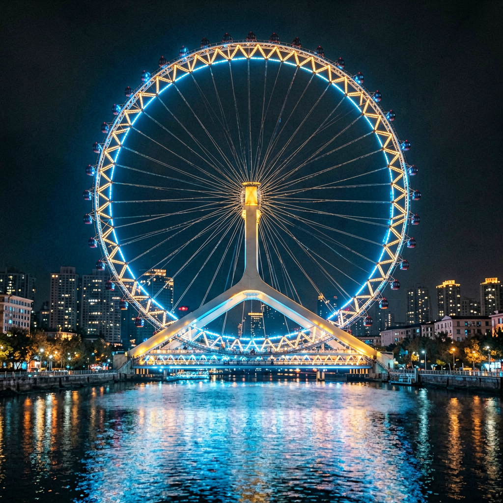
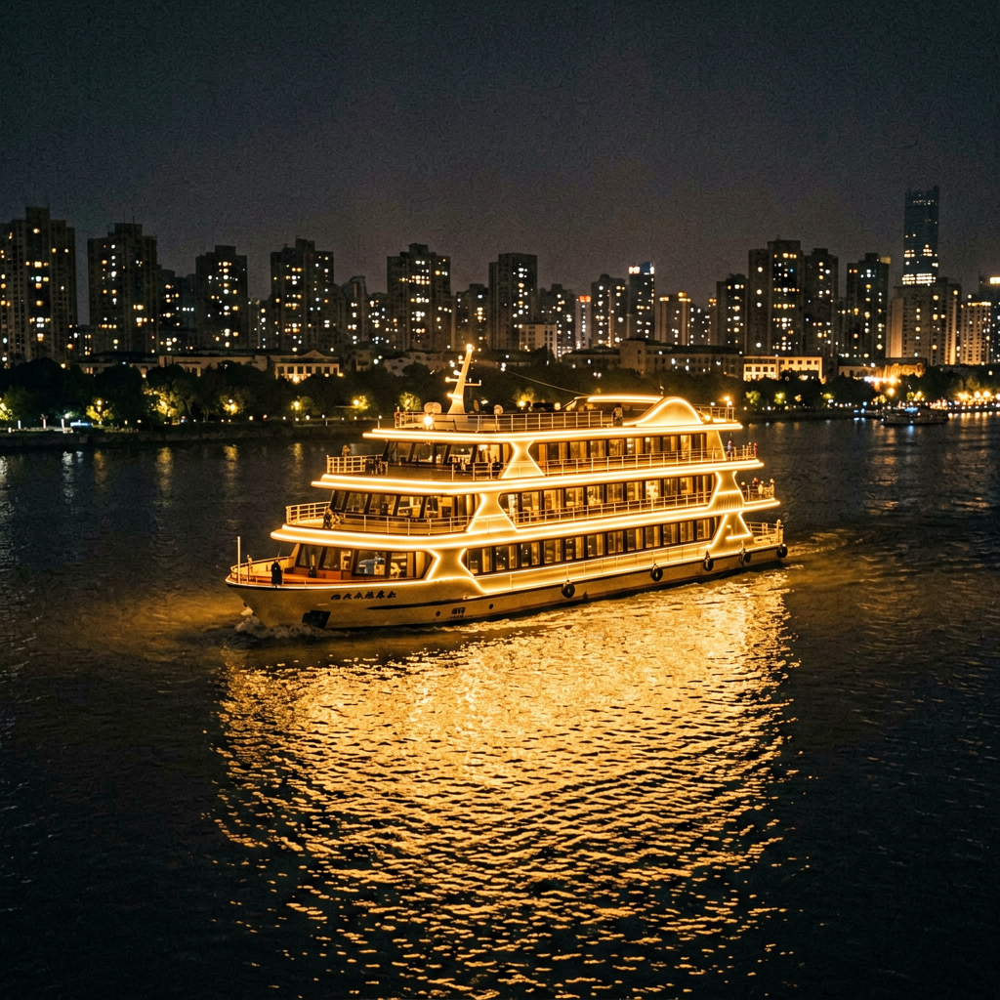
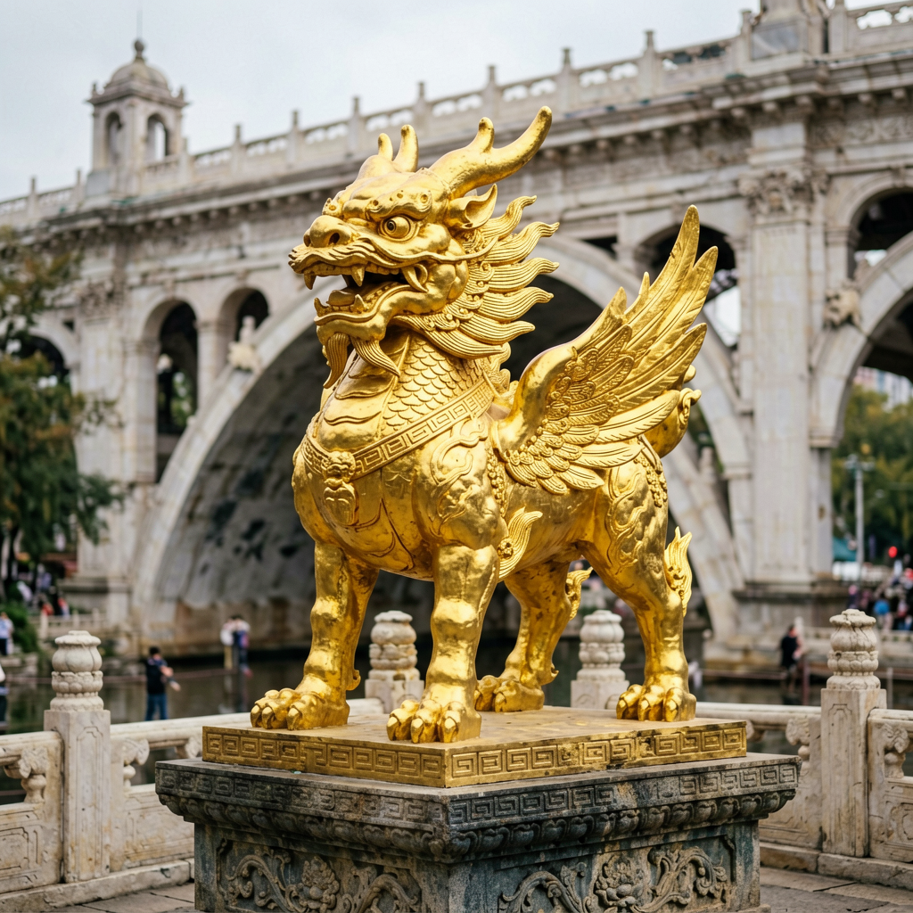
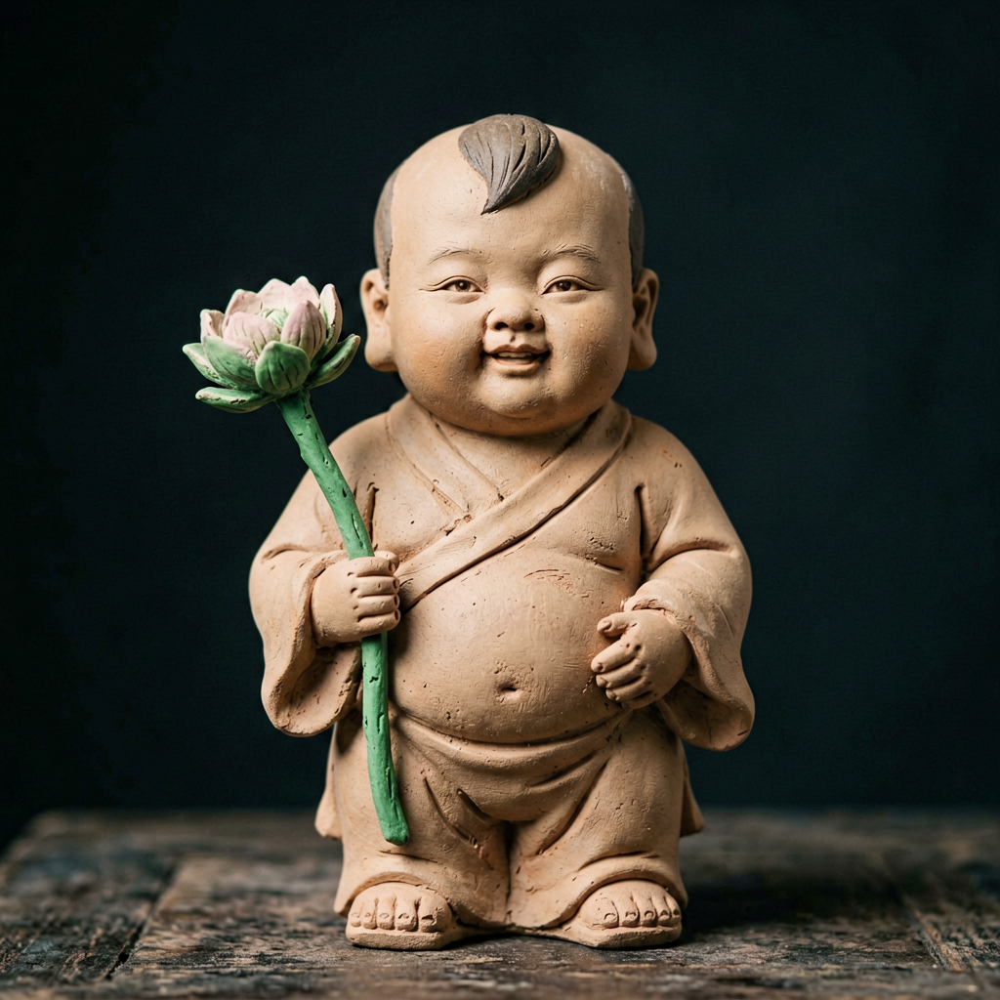
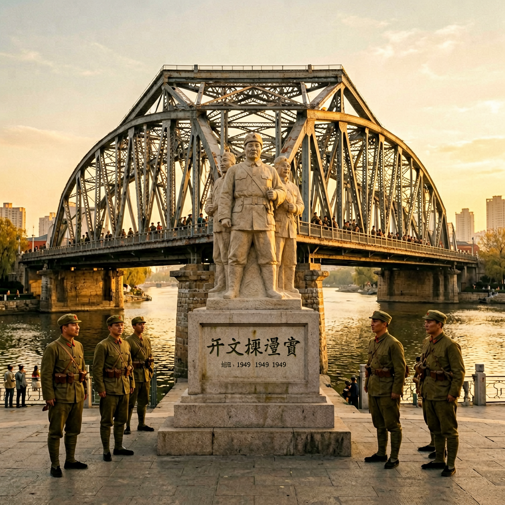
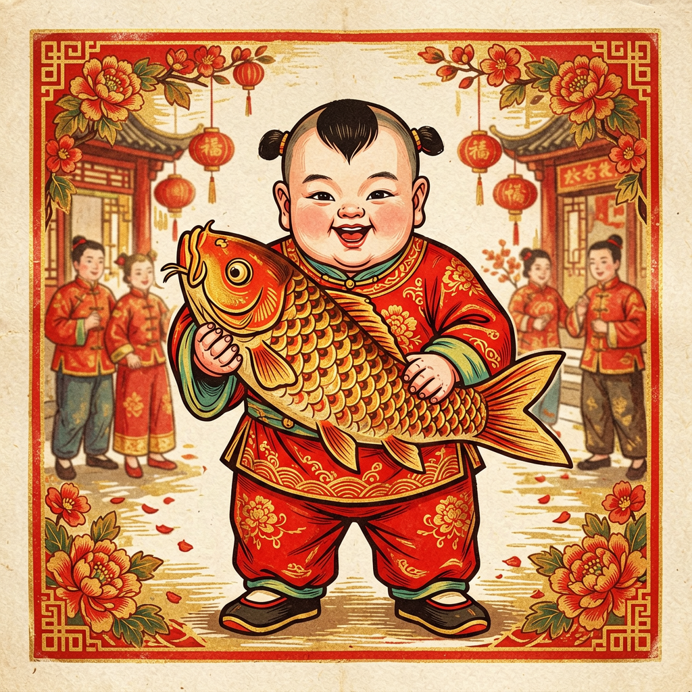
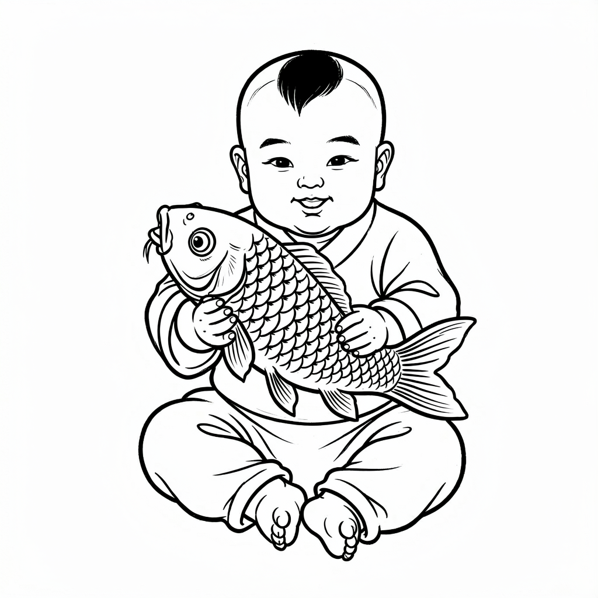
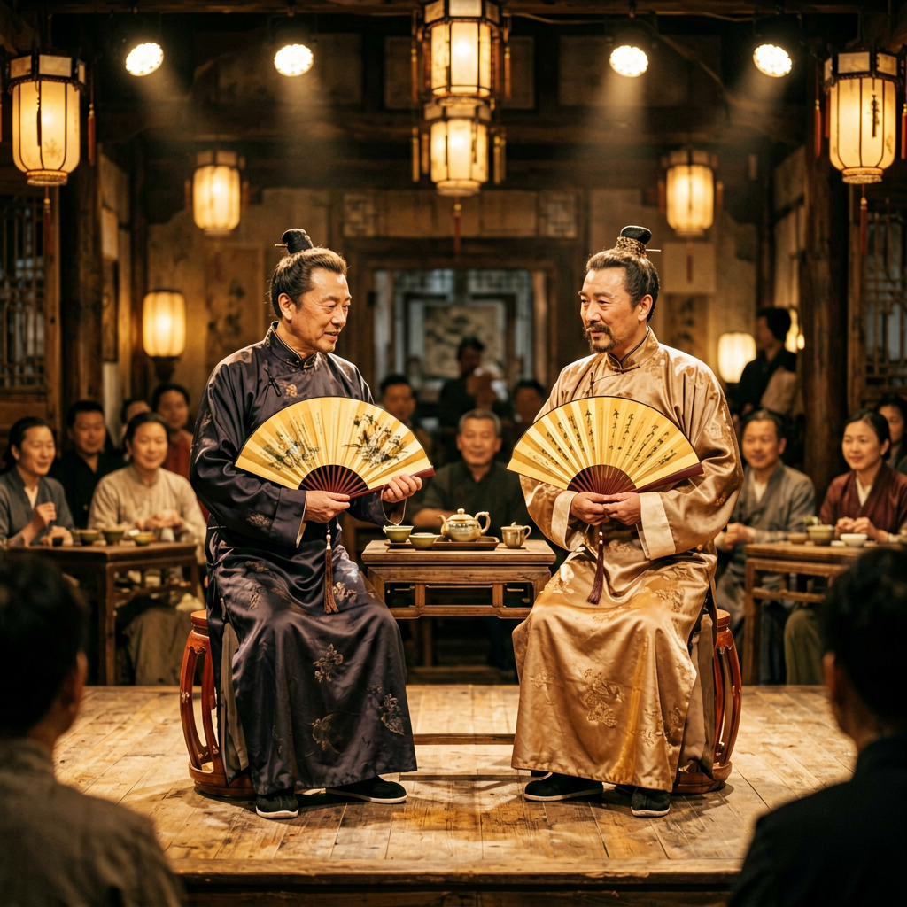
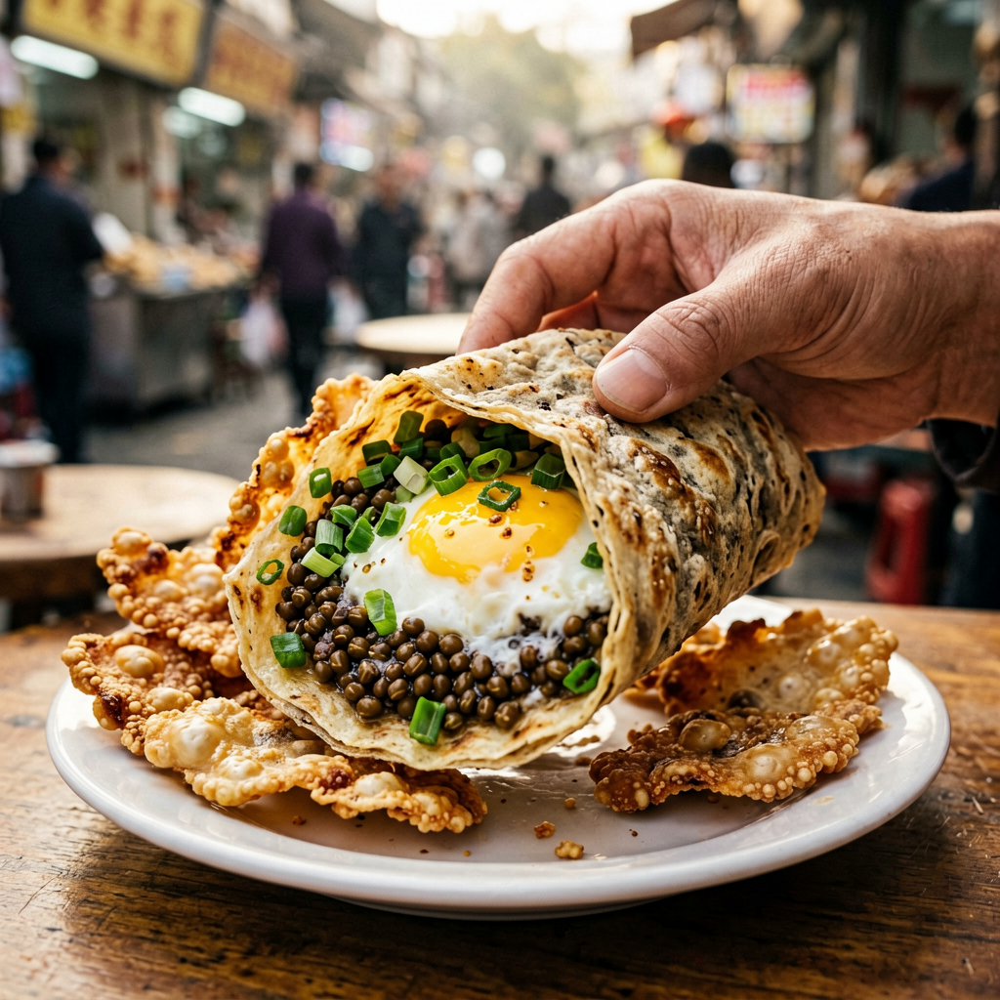

津 门 · 海 河 · 六 桥
海河漂流记
登船启航 · 顺流而下
登上一叶扁舟，沿海河顺流而下。途经六座百年名桥，每至一码头停靠——赏景点、品美食、读人文。完成桥畔互动挑战，收集通关印章，集满六印，成就「海河通达」。
向下滚动 · 随波而行 ↓
解放桥
黃金钢架桥 · 津门地标 · 1927
解放桥横跨海河，是天津的标志性建筑。这座钢架开启式桥梁建于1927年，桥体可开启供大型船只通过。桥头连接天津站与津湾广场，日夜车水马龙，是津门繁华的起点。
天津站
津浦铁路的起点，百年老站。欧式钟塔巍峨矗立，站前广场直面海河，是天津的城市门户。
津湾广场
海河畔的欧式建筑群，夜幕降临时灯火璀璨，倒映河中，是津门夜色的代表。
狗不理包子
百年老字号，每个包子捏出十八个褶，皮薄馅大，鲜香多汁，津门美食名片。
手作狗不理
依循古法，按正确顺序点击食材，亲手包一只狗不理包子。顺序：溫水→面粉→豬肉餡→揉面→上籠。
盖印
赤峰桥
獨塔斜拉桥 · 海河夜明珠
赤峰桥是海河上造型独特的独塔斜拉桥，桥塔如帆似桅，斜拉索似琴弦。桥畔的天津之眼摩天轮跨河而建，是世上唯一建在桥上的摩天轮，登之可览津门万家灯火。

天津之眼摩天轮
高达110米的摩天轮，跨河而建，世界唯一。夜幕中流光溢彩，转一圈可见整座津城。

海河夜游
乘游船顺流而下，两岸灯火倒映河面，桥梁在光与影中次第展开，津门夜色尽收眼底。
点亮摩天轮
逐一点击摩天轮上的灯珠，点亮全部8盏LED，让天津之眼绽放光芒。
盖印
北安桥
歐陆风情桥 · 中西合璧
北安桥是一座欧式古典风格的桥梁，桥头四尊鎏金神兽镇守，桥身雕饰精美。桥北即是著名的意式风情区，是中国唯一保存完整的意大利风情建筑群，洋楼林立，异国情调浓郁。
意式风情区
中国唯一的意大利风情建筑群，红顶洋楼错落有致，曾是近代名流寓所，如今洋吧林立。

北安桥神兽雕像
桥头四尊鎏金神兽，中西合璧的造型寓意祥瑞，是北安桥最醒目的标志。
洋楼寻配
将左侧建筑名称与右侧图样一一配对：先点名称，再点对应图样。
盖印
进步桥
现代拱桥 · 民俗通衢
进步桥是一座现代钢拱桥，桥身轻盈流畅。桥畔即是著名的古文化街，青砖灰瓦间，天津民俗文化在此生根发芽——泥人张彩塑、杨柳青年画、风筝魏，皆为津门民间艺术的瑰宝。
古文化街
天津民俗文化发源地，青砖灰瓦，旗幡招展。年画、泥人、风筝汇聚，津味十足。

泥人张彩塑
百年彩塑艺术，以捏塑人物见长，形神兼备，曾为清宫御赏，列津门民间艺术之首。
泥人成序
按捏制工序顺序点击泥人各部位：壹→贰→叁→肆，完成一尊泥人。
盖印
金湯桥
百年钢架桥 · 会师聖地
金汤桥建于1906年，是海河上最早的钢结构桥之一。1949年平津战役中，人民解放军东西两路在此会师，天津宣告解放，金汤桥由此成为革命圣地。桥畔杨柳青年画，色彩绚烂，喜庆吉祥，为中国四大年画之一。

平津战役会师纪念
1949年1月，解放军东西两路在金汤桥会师，天津解放。这座桥见证了历史的转折。

杨柳青年画
中国四大年画之一，木版印线、手工彩绘，娃娃抱鲤鱼的图样喜庆吉祥，名扬四海。
年画填彩
先选一色，再点年画的空白处上色。填满4处，完成一幅喜庆年画。

选 色
盖印
獅子林桥
百獅石桥 · 曲艺之乡
狮子林桥以桥上数百尊形态各异的石狮子闻名，桥栏桥墩处处是狮，堪称津门石狮博物馆。桥畔是天津曲艺与市井早点的天堂——茶馆里相声段子此起彼伏，街角处煎饼果子热气腾腾，最是津味烟火气。
石獅子（1181只）
桥上数百尊石狮，或立或卧，或大或小，形态各异，堪比卢沟桥，是津门石雕艺术的精华。

相聲茶馆
天津是相声之乡，茶馆里段子不断，捧哏逗哏妙语连珠，津门人最爱的市井娱乐。

煎餅餜子
天津早点之王。绿豆面薄饼裹薄脆餜子，抹面酱撒葱花，街头现摊现卖，津人一日不可或缺。
相聲问答
点击「播放」听一段津味快板，听完后作答3道选择题。题目关于天津方言与饮食文化。
盖印